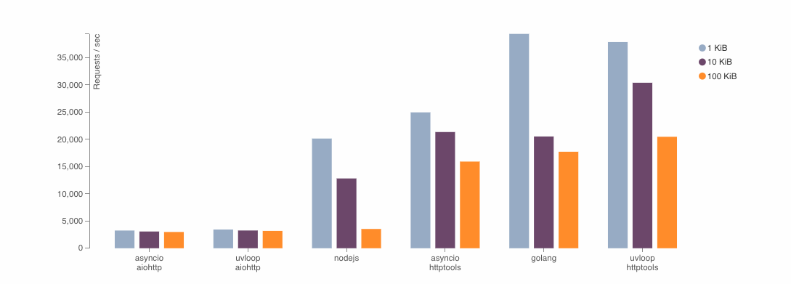

class: center, middle, inverse # All about Python 3 .footnote[ created with [remark](https://github.com/gnab/remark) ] --- # Agenda ### New features in Python3 ### How to migrate to Python3 --- class: center, middle, inverse # Why Python3 ? ## [https://pythonclock.org/](https://pythonclock.org/) --- # Type Hints ### Introduced in [PEP 484](https://www.python.org/dev/peps/pep-0484/) / [PEP 526](https://www.python.org/dev/peps/pep-0526/) ### From [mypy](http://mypy-lang.org/) --- # Type Hints ### Before ```python def add(x, y): return x + y ``` ### After ```python import typing Num = typing.Union[int, float] def add(x: Num, y: Num) -> Num: return x + y ``` --- # Type Hints ### Benefits? Static type checker: ```python import typing Num = typing.Union[int, float] def add(x: Num, y: Num) -> Num: return x + y add('foo', 1) ``` ```bash $ mypy ex1.py ex1.py:11: error: Argument 1 to "add" has incompatible type "str"; expected "Union[int, float]" ``` --- # Type Hints ### Benefits #### Static type checker * [mypy](http://mypy-lang.org/) * [Pyre-checker](https://github.com/facebook/pyre-check) * PyCharm ### Auto Completion * [Jedi](http://jedi.readthedocs.io/) * PyCharm ### JIT? --- # AsyncIO + async/await ## AsyncIO * High performance networking * Like Nginx / NodeJS / Go * Using `select` / `epoll` / `kueue` --- # AsyncIO + async/await ## AsyncIO ### Difference from Tornado / Twisted * **BUILT-IN** IO event loop, no more wheels: * [aiomysql](https://github.com/aio-libs/aiomysql) * [asyncio-redis](https://github.com/jonathanslenders/asyncio-redis) * ... * Plugable IO event loop: * [uvloop](https://github.com/MagicStack/uvloop) --- # AsyncIO + async/await ## AsyncIO performance  --- # AsyncIO + async/await ### No more callback hell Before: ```python import requests3 def fetch_content(url): requests3.get(url, on_requests_complete) def on_requests_complete(resp): content = resp.json() save_to_db(content, on_save_to_db_complete) def on_save_to_db_complete(id): print 'saved id:', id fetch_content('http://google.com') ``` --- # AsyncIO + async/await ### No more callback hell After: ```python import requests3 async def fetch_content(url): resp = await requests3.get(url) content = resp.json() id = await save_to_db(content) print 'saved id:', id await fetch_content('http://google.com') ``` --- # gc.freeze() How do we deploy Python web applications? * Multi process + prefork * Average memory usage per process: about 500M ~ 1G How Linux kernel manage subprocess's memory? * Copy-on-Write Python's GC Header: ```c /* GC information is stored BEFORE the object structure. */ typedef union _gc_head { struct { union _gc_head *gc_next; union _gc_head *gc_prev; Py_ssize_t gc_refs; } gc; long double dummy; /* force worst-case alignment */ } PyGC_Head; ``` --- # gc.freeze() ### [Dismissing Python Garbage Collection at Instagram](https://instagram-engineering.com/dismissing-python-garbage-collection-at-instagram-4dca40b29172) * Save more memory (8GB each server) * 2-3% cache miss ratio, for 10% CPU performance increase ### [CoW friendly GCCopy-on-write friendly Python garbage collection](https://instagram-engineering.com/copy-on-write-friendly-python-garbage-collection-ad6ed5233ddf) * Freeze objects before fork --- # More ### [Compact Dictionaies](https://mail.python.org/pipermail/python-dev/2012-December/123028.html) * 20% to 25% less memory reduce, more performance ### [Python 3 with Pleasure](https://github.com/arogozhnikov/python3_with_pleasure) --- class: center, middle, inverse # Way to Python3 --- # Way to Python2 ### 2to3 Pros: * Support by Python Cons: * Not 100% reliable * Migrated codes is Python3 only --- # Way to Python3 ### `__futures__` ```python3 from __future__ import absolute_import from __future__ import division from __future__ import print_function from __future__ import unicode_literals ``` ### [six](https://pythonhosted.org/six/) * renamed modules and attributes (`six.range`, `six.picle`) * class model * builtin types (`six.string_types`, `six.integer_types`) --- ### Way to Python3 * [3rd party libs](https://python3wos.appspot.com/) * Base libs support Python2 and Python3 (using `__future__` and `six`) * Using python3 in new projects * Old project support both Python2 and Python3 (using `__futures__` and `six`), Run in Python2 * Run projects in Python3 * Delete all compatibility codes --- class: center, middle, inverse # F & Q